Each of us in VOICES possesses a unique lived experience and we believe it is these personal encounters with illness, caregiving, and end of life that enable us to offer invaluable insights to help shape and enrich approaches to care.
Voices is a consumer-led collaborative of individuals with lived experience in serious illness and palliative care, who partner with researchers and clinicians in palliative care. Meet our members:
Christine has experienced being a carer for several family members with serious illness (with malignant and non-malignant disease) and palliative care needs, most recently her sister with cancer. Before retiring, Christine worked as a palliative care nurse consultant for 27 years where she was involved in providing palliative care for patients, their caregivers and family. She is informed in service and policy development at a local and national level, including as a consumer representative for Palliative Care Australia. Christine believes it is essential to ensure consumers' and carers' views and experiences are heard and integrated into research, policy and service improvements.
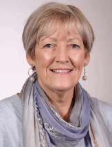
Simon cared for his young son, Marmaduke, and wife Millsom, through parallel terminal cancer journeys. His family's experience of adult palliative care was restricted in scope, length and flexibility, while the paediatric palliative care received was extensive, responsive and supportive over a long period in hospital and at home. Since 2015, Simon has spoken to politicians, health professionals and the public on the importance and impact of palliative care for patients, families and community. As a consumer representative he has partnered with Queensland Health, The Royal Children's Hospital Melbourne, and Palliative Care Australia, and Safe Care Victoria. Simon's hope is to contribute to the continued growth, promotion, and acceptance of palliative care.
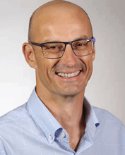
Catherine has been a carer for different family members with serious (malignant and non-malignant) illness, including most recently her brother who was diagnosed with oesophageal cancer. Based in Tatura, regional Victoria, Catherine has worked for 35 years in nursing and clinical leadership roles across palliative care, emergency medicine and intensive care. In her role Catherine is responsible for nurse education and skill development. Catherine is also actively involved in a broader role of promotion of and education about palliative care in the community and advocating for people with palliative care needs.
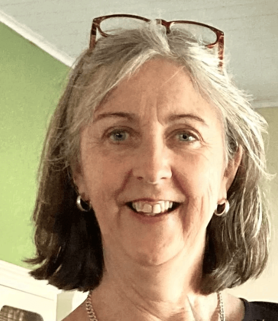
Avi cared for his wife Gita who lived with cancer for 12 years. This presented a whole new set of challenges as he worked to navigate and juggle so many different roles. Yet while he faced challenges, Avi believes there were also incredible rewards in being a carer for his wife. Avi has now trained as a grief counsellor to support other carers. He believes it is important for people to understand more about what palliative care can offer for people with serious illness, their carers and family. For the past 18 months, Avi has been actively involved in providing a carer voice in palliative care research and service development.
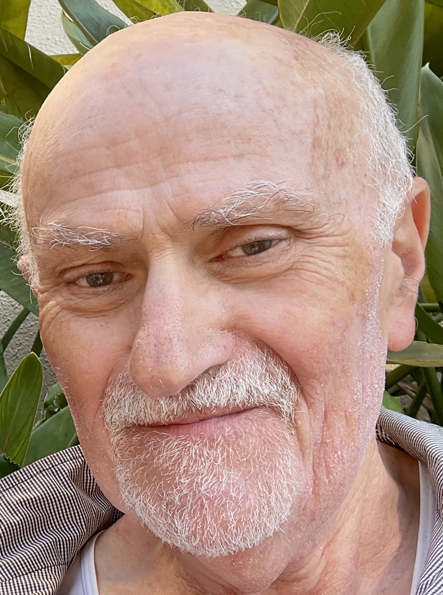
Adrienne has personal experience as a carer providing care at the end-of-life for her husband with dementia. Professionally, Adrienne has experience as an accreditor for aged care, palliative care and acute health services. She believes there is much to be done to expand and improve palliative care services to provide greater access for people with serious illness. Adrienne believes we need to make palliative care a topic 'for now', ensuring it is a priority in everyone's thinking. She is passionate about raising community awareness and understanding of good palliative care, and more clearly identify what patients, carers and families want and need when faced with serious illness and end-of-life decisions.
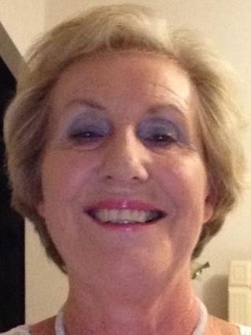
Michelle was a carer for her father who lived with Parkinson's disease, dementia and prostate cancer, providing support and a voice for him and her mother. Michelle works as a registered nurse with experience in aged care, dementia care education and palliative care in regional Victoria. She also works as an Advocate for Elder Rights Advocacy. Michelle is a Guide for the Violet Initiative, volunteering to help guide and support people caring for a loved one with serious illness. Michelle is focused on improving care for people with serious illness and their carers to ensure they are empowered to understand their rights and express their needs.
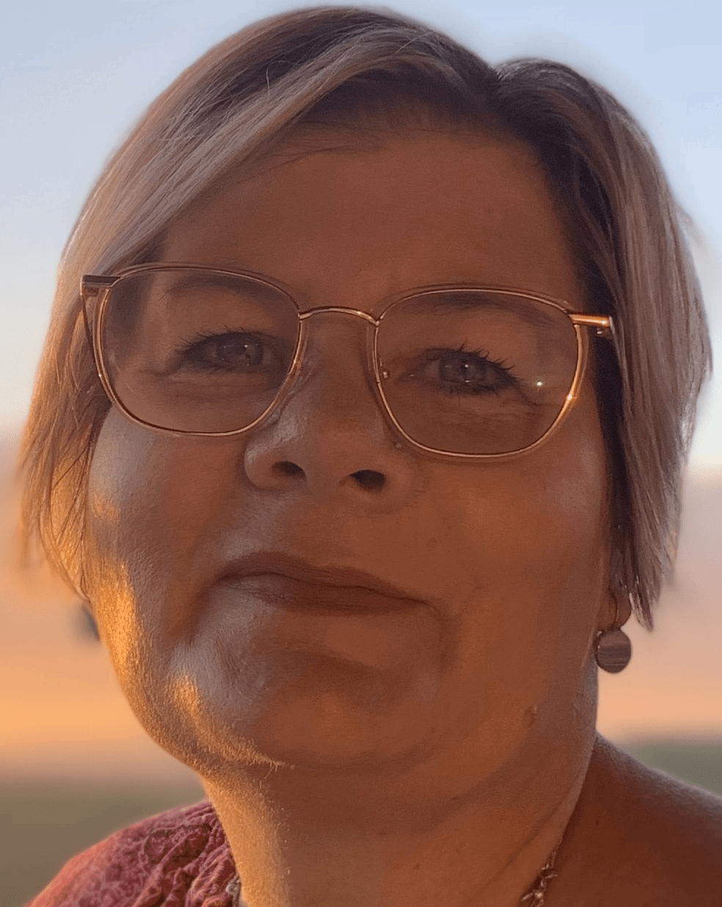
In caring for her husband, Graham, with young onset Alzheimer’s Imelda learned how to be an advocate to ensure he received the best possible care and quality of life. Palliative care support enabled Imelda to honour her husband’s values and enjoy special moments in his last stage of life. Imelda is an experienced Dementia Advocate and partners with researchers nationally and internationally, with contribution to advisory groups such as the Australian Digital Health Agency. Realising that we only get one chance to walk a loved one through their end-of-life journey, Imelda is passionate about ensuring other carers are empowered by this knowledge and encouraged to advocate for the best possible palliative and end-of-life care.
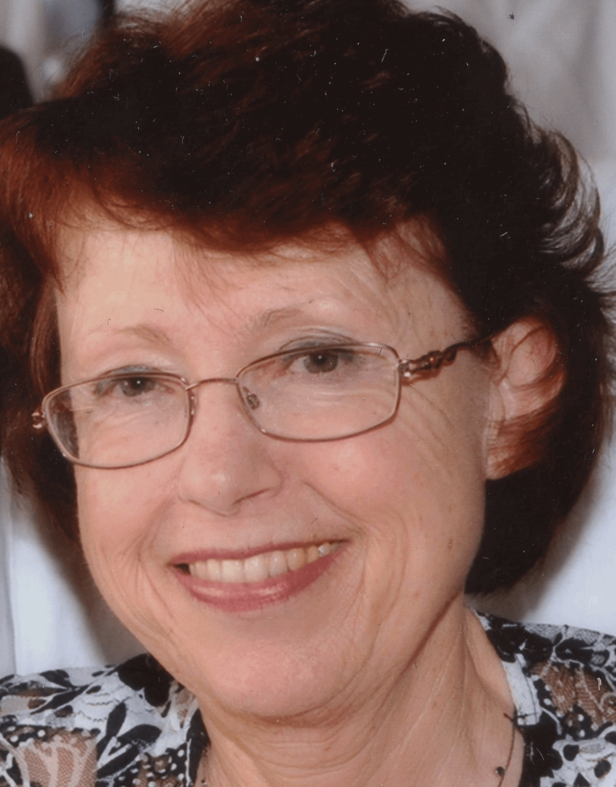
Like many others in the community, Tristan was unaware of the scope and function of palliative care until both his parents were diagnosed with cancer. In providing care for his mother during her 10-months of illness, Tristan experienced the impact of a late introduction and involvement of palliative care support. In contrast, his father received responsive and supportive community, outpatient and inpatient palliative care over a long period. Bringing skills from his career in management, Tristan values working with others and desires to be a voice and contribute to the conversation advocating for quality and early involvement of palliative care in serious illness. He is passionate about educating carers and families on the benefits of palliative care.
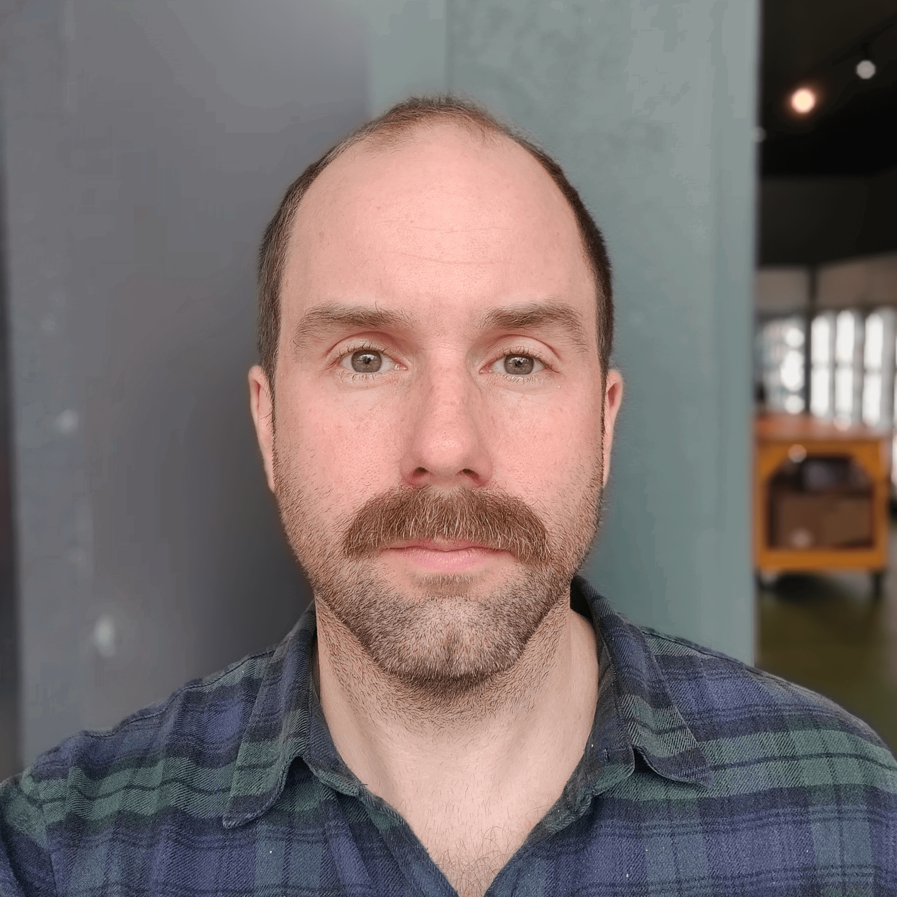
John’s experience of palliative care began in 2016 when he cared for his wife who had pancreatic cancer. During this time, John’s knowledge of palliative care grew from what he describes as ‘woefully inadequate’, to a strong awareness of the benefits this care offers. He also observed that health professionals were seemingly reluctant to refer his wife. Since this time, John has become actively involved in serving on numerous health and palliative care committees and consumer groups with hospitals, government, university research teams and national peak bodies such as Palliative Care Australia and the Consumer Health Forum. John has a passion for enhancing public awareness and ensuring earlier access to palliative care for patients with serious illness.
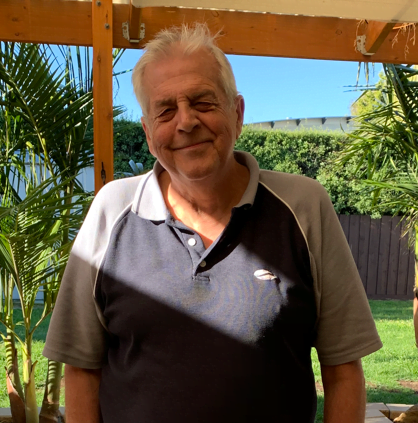
John is interested in bringing his knowledge and experience as a carer and health consumer advocate, alongside his professional experience as a lawyer and management consultant to improve opportunities for access to and provision of palliative care for people with life limiting illness. John started to become an active health consumer representative in 2008 through his membership of Consumer Health Forum of Australia, Cochrane and the Health Issues Centre having been appointed to Victorian Public Healthcare Awards’ judging panel and the working group concerned of various hospitals, medical organisations and research projects. As a Chinese migrant, John hopes to be a much-needed voice for existing and emerging migrant communities as well as his own in building an understanding of and access to palliative care.
Jennifer Philip is the Chair of Palliative Medicine, University of Melbourne, St Vincent’s Hospital and in collaboration with the Victorian Comprehensive Cancer Centre. Jennifer is a palliative care physician whose research focuses on improving access and equity to high quality care for people with advanced illness and improving the evidence base underpinning symptom management.
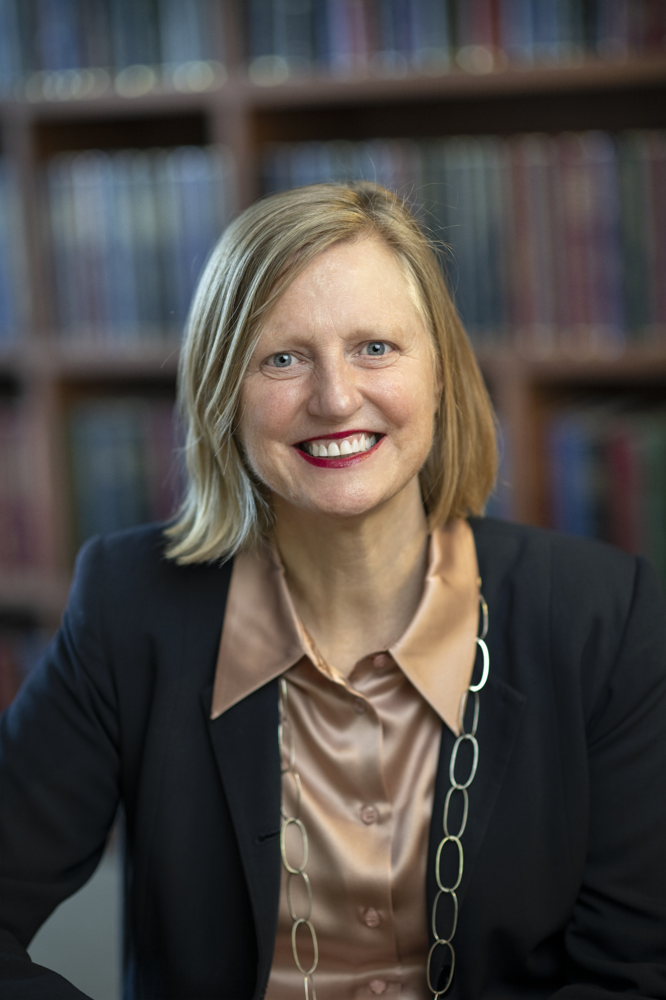
Anna is a NHMRC Emerging Leader and Senior Research Fellow for Palliative Nexus in the Department of Medicine at St Vincent’s hospital, and the University of Melbourne. Anna’s research explores and promotes engagement with timely access to palliative care for people with serious illness, designing new health service models, and evolving community understandings and advocacy for improved care.
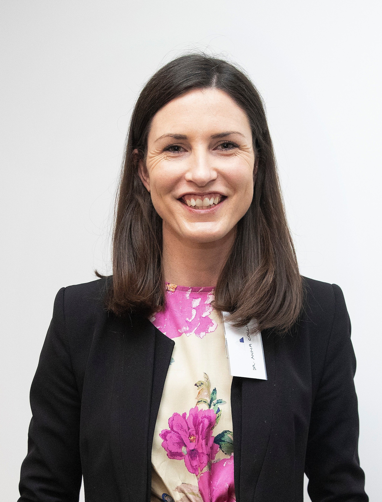
Peter is the Director of the Centre for Palliative Care c/o St Vincent’s Hospital and a Collaborative Centre of The University of Melbourne, Australia. He is a Professor (Honorary) at The University of Melbourne and Vrije University Brussels, Belgium. The main focus of Peter’s work relates to evidence based strategies to improve the wellbeing of people living with serious illness and their family carers.
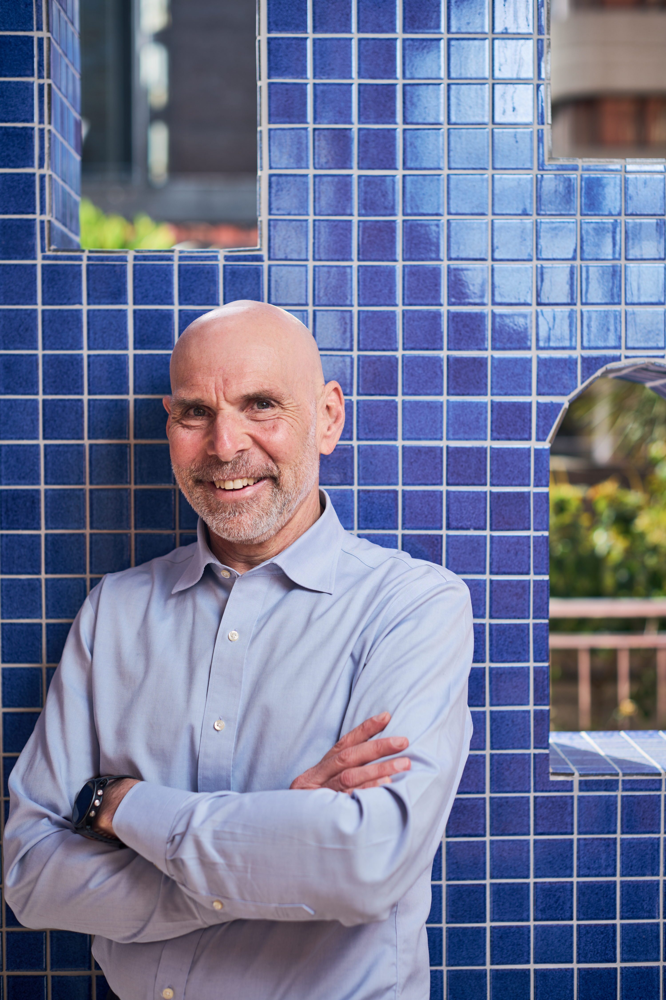
Mollie Wilson is PhD candidate and early career researcher, investigating the various ways that people adapt to the uncertainties of serious illness. Mollie is a member of the Palliative Nexus research team, working across St Vincent’s Hospital, and The University of Melbourne. Mollie oversees and coordinates Voices for Palliative Care.